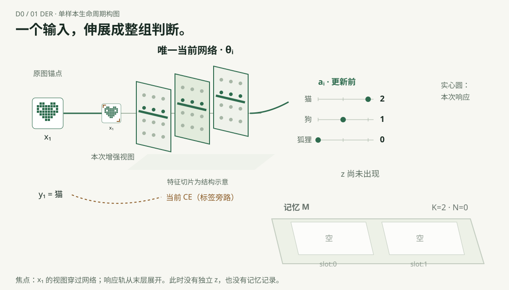
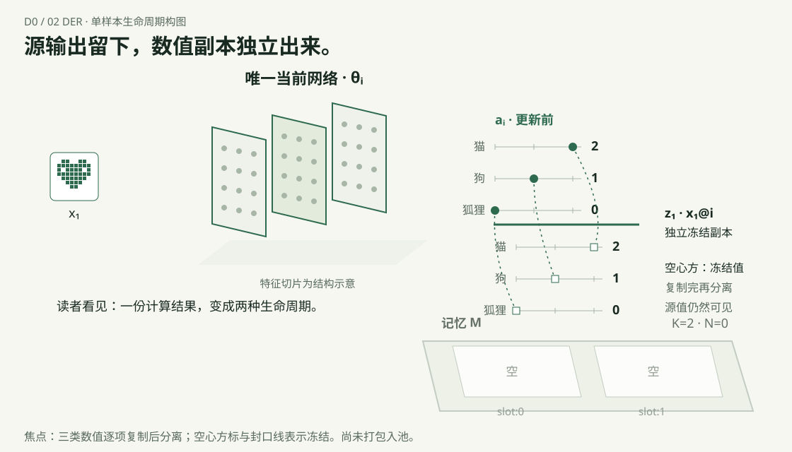
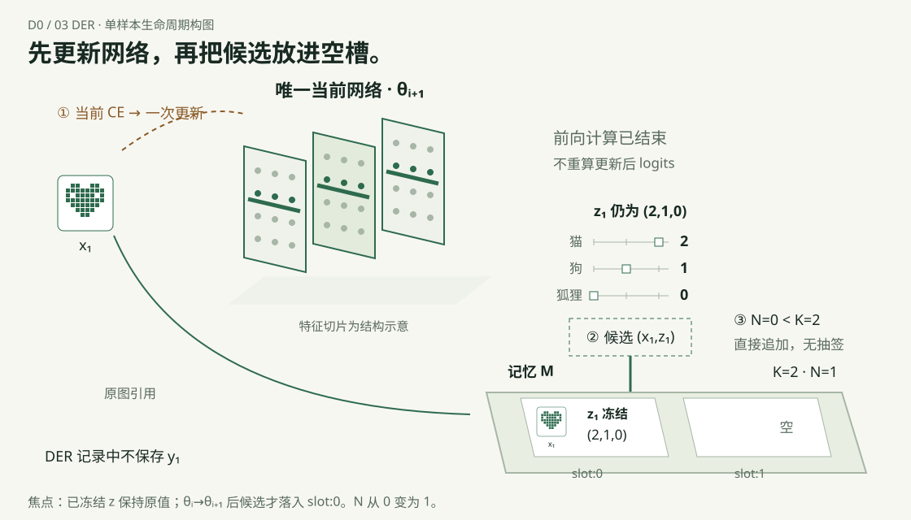
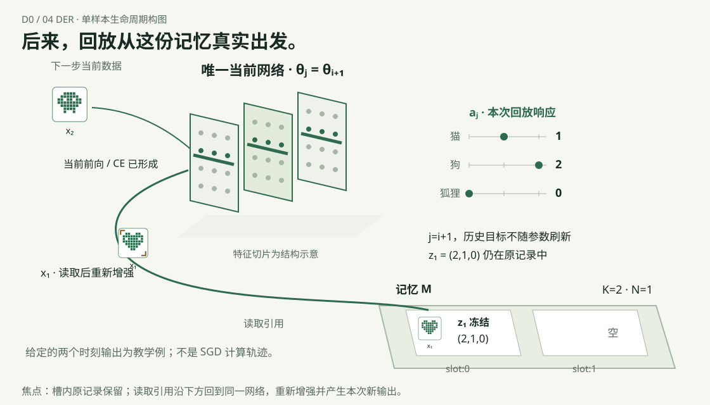
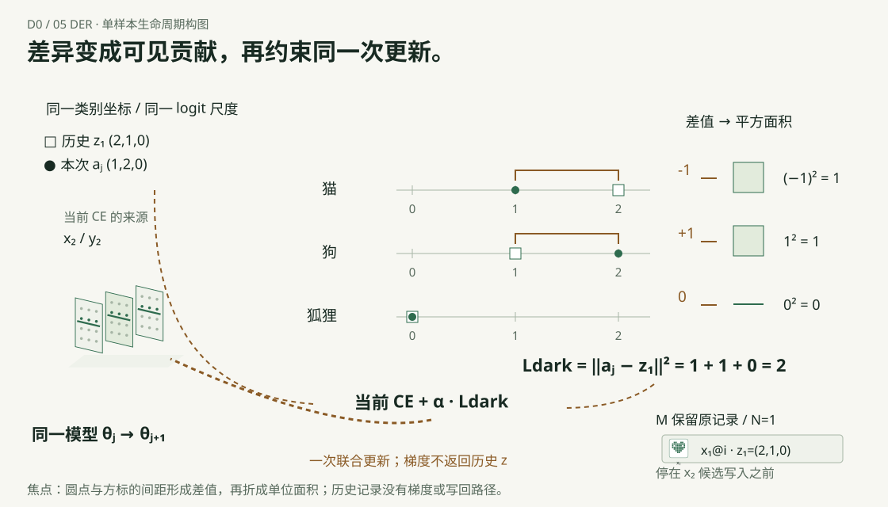

DER · D0 场景设计板
五张静态代表构图；用于确认对象、空间与运动方向。可播放原型在方向确认后实施。
01 · 一个输入，伸展成整组判断

02 · 源输出留下，数值副本独立出来

03 · 先更新网络，再把候选放进空槽

04 · 后来，回放从这份记忆真实出发

05 · 差异变成可见贡献，再约束同一次更新

演示数据：z₁=(2,1,0)，aⱼ=(1,2,0)。网络切片为结构抽象，未执行数值网络训练。